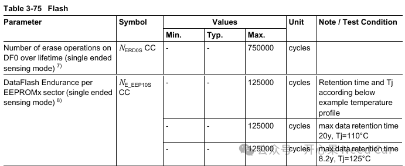
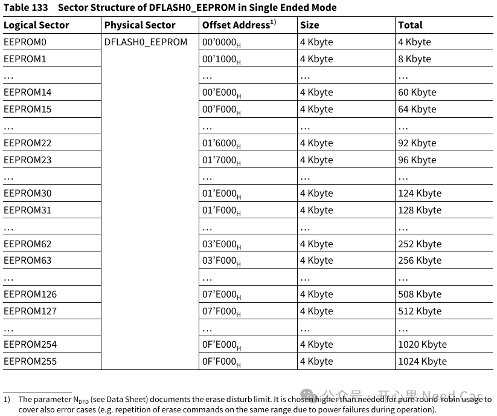
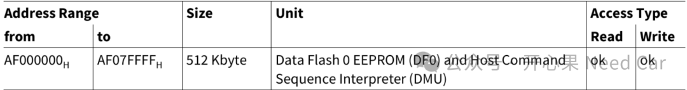
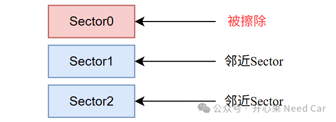
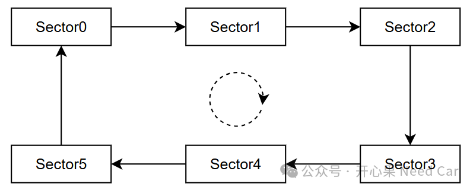

开心果 Need Car · 2026-08-04T06:21:00+08:00 · 微信原文
在基于英飞凌AURIX™ TC3xx开发汽车ECU时，NVM（Non-Volatile Memory，非易失性存储器）是系统中极其重要的组成部分。无论是故障码（DTC）、学习值、自适应参数，还是AUTOSAR NvM模块管理的数据，最终都需要保存在DFlash中。由于这些数据会被频繁更新，因此DFlash寿命评估成为项目开发阶段必须关注的话题。
然而在实际项目中，经常会听到这样的说法：“TC3xx的DFlash寿命是125000次擦写。”
这句话并不完全准确。实际上，英飞凌针对TC3xx DFlash给出了两个不同层级的寿命指标，只有同时理解两者，才能正确评估系统寿命。
1.TC3xx中的NVM架构
TC3xx内部主要包含两种Flash：
（一）PFlash（Program Flash）
主要用于存储Bootloader、Application代码、标定数据、固定配置参数等。由于这类程序下载次数有限，因此PFlash通常不会成为寿命瓶颈。
（二）DFlash（Data Flash）
主要用于：EEPROM Emulation、故障码存储、学习值存储、网络状态、车辆配置信息等数据。DFlash专门针对频繁更新的数据进行了优化，具有远高于普通程序Flash的耐久度。
2.DFlash寿命的两个关键指标
DFlash寿命的两个关键指标：Number of erase operations on DF0 over lifetime和DataFlash Endurance per EEPROMx sector。如下所示：

指标一：DataFlash Endurance per EEPROMx sector
典型值：125000 Erase Cycles，以TC38x为例，单个Logical Sector的大小（4KB，Single Ended Mode）如下所示：

它表示：单个EEPROM Sector能够承受约125000次擦除操作。
例如：Sector0 擦除->写入->擦除->写入，当Sector0经历约125000次擦除后，即达到手册定义的寿命极限。
指标二：Number of erase operations on DF0 over lifetime
典型值：750000 Erase Cycles。以TC38x为例，整个DF0的大小（512KB）如下所示：

它表示：整个DF0 Bank（Physical Sector）生命周期允许执行约750000次擦除操作。 需要特别注意：这是Bank级别限制，而不是某个Sector的限制。
3.为什么会有两个寿命指标？
很多工程师第一次看到会感觉困惑：单Sector寿命 = 125000次，整个Bank寿命 = 750000次，为什么两个数字同时存在？以TC38x为例，整个Bank最大使用次数不应该是12.5*256 = 3200W次吗？原因在于：Flash擦除不仅会磨损存储单元本身，还会对Flash内部控制逻辑、电荷泵以及模拟电路产生应力，因此英飞凌同时定义了Sector级寿命和Bank级寿命。
进一步解释：Flash 擦除不是完全局部的操作。当擦除某个 Sector 时，示意如下：

高压擦除脉冲会对周围未擦除的 Sector 产生微小影响，这种现象称为：Erase Disturb（擦除干扰），即：擦除一个Sector时，对其它Sector造成的非预期电荷扰动，长期积累后可能导致：阈值电压漂移、数据保持能力下降、Bit错误增加。即使临近的Sector从未被擦除，它仍然会因为旁边 Sector 被反复擦除而受损。
4.不做Wear Leveling（磨损均衡）会发生什么？
很多项目初期喜欢采用简单策略：参数A始终写Sector0。这种设计会导致：Sector0 = 125000次，Sector1 = 0次，Sector2 = 0。虽然整个DF0还有大量剩余寿命，但Sector0已经达到极限。
此时可能出现：擦除失败、数据写入失败、ECC错误增加、参数丢失风险。因此系统寿命实际上受限于：125000次，不是750000次。
5.Wear Leveling的重要性
EEPROM Emulation的核心思想就是：不要一直写同一个Sector，而应该轮换使用多个Sector：Sector0->Sector1->Sector2->Sector3。这样每个Sector承担的擦除压力基本相同。示意如下：

原本只能利用：125000次寿命，寿命提升可达到数倍。关于NVM以及切页的描述，可以参考前文：
6.如何估算项目中的DFlash寿命？
计算思路非常简单：寿命 =允许擦除次数÷实际擦除频率。
案例1：每天保存1次/天
一年：365次
十年：3650次
相对于125000次寿命来说几乎可以忽略。
案例2：每小时保存一次，24次/天
一年：8760次
寿命：125000 ÷ 87602 ≈ 14年
已经需要关注整车生命周期要求。
案例3：每分钟保存一次，1440次/天
一年：525600次
若未进行Wear Leveling：125000 ÷ 5256002 ≈0.24年
不到三个月就可能耗尽一个Sector寿命。这种设计在量产项目中显然无法接受。
7.AUTOSAR项目中的最佳实践
为了保证DFlash在整车生命周期内可靠运行，通常建议：
1. 使用RAM缓存，不要变量一变化就写Flash。
2. 合并写操作，多个数据块集中保存。
3. 周期保存，例如：10分钟保存一次，而不是1秒保存一次。
4. 掉电保存，运行期间存放在RAM，关键时刻再写入Flash。
5. 启用Wear Leveling，充分利用多个Virtual Sector，提高整体寿命。
总结
对于TC3xx DFlash寿命设计，需要同时关注两个官方指标：125000次/Sector以及750000次/DF0。前者限制单个Sector的寿命，后者限制整个DFlash Bank的总寿命。
在实际ECU项目中，真正决定DFlash能否支撑15/20/30年以上生命周期的，不是Flash本身，而是软件设计策略。合理的EEPROM Emulation、Wear Leveling以及NvM写入机制，可以让TC3xx DFlash轻松满足整车寿命要求；而不合理的高频写入设计，即使拥有高耐久度DFlash，也可能在极短时间内耗尽寿命预算。
往期精彩回顾